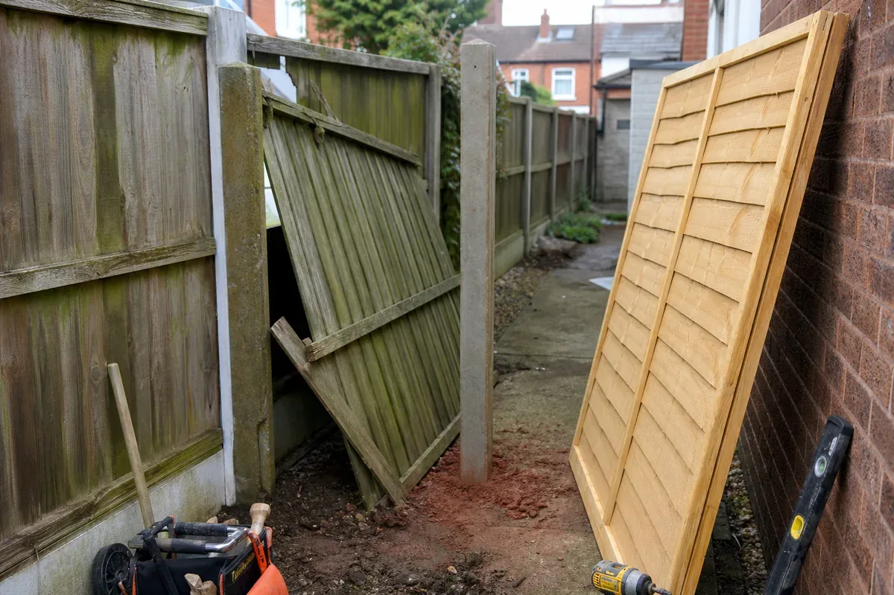
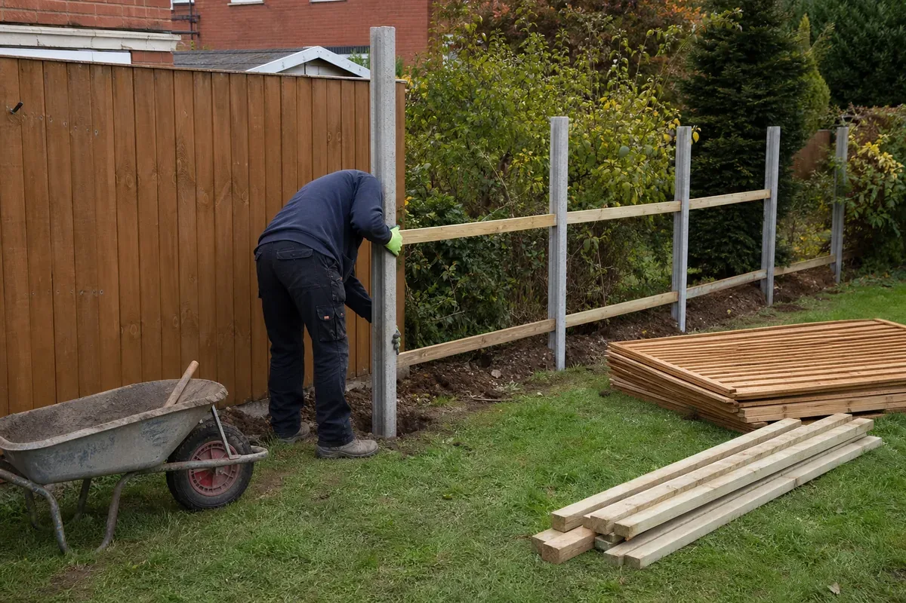
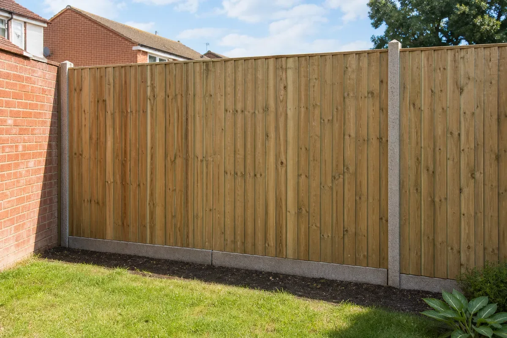
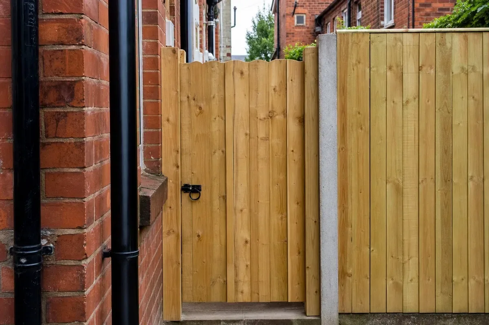

Timber and composite garden boundaries for rear gardens, side passages and shared property lines.
Closeboard, feather edge and panel systems for privacy and boundary marking on residential plots across Birmingham.
View service
Select a service for specification detail, typical scope and FAQs. All enquiries receive a written quote before work is booked.
Timber and composite garden boundaries for rear gardens, side passages and shared property lines.
Closeboard, feather edge and panel systems for privacy and boundary marking on residential plots across Birmingham.
View serviceReplacement of damaged panels, posts and gravel boards after weather wear or impact damage.
Single-panel swaps, post re-setting and gate adjustments where the remaining fence line is structurally sound.
View service
New fence runs set out from post centres, with concrete footings sized to panel height and soil conditions.
Full boundary installation including post setting, rails, panels, gravel boards and agreed waste removal.
View service
Composite panel systems as an alternative to treated timber where lower ongoing maintenance is required.
Wood-plastic panels with matched posts — suited to homeowners who prefer not to stain timber annually.
View service
Vertical closeboard boards fixed to rails for a solid garden boundary with no gaps between boards.
Solid privacy screening for rear gardens — boards meet edge to edge on arris rails between concrete-set posts.
View service
Overlapping feather edge boards or prefabricated panels suited to standard garden lengths.
Overlap boarding or standard panels for level runs — economical option for typical suburban bay lengths.
View service
Timber garden and side gates hung to align with existing fence height and opening width.
Side passage and garden gates with hinges, latches and frames sized to your opening and fence profile.
View service
Perimeter fencing for yards, car parks, schools and business premises across the West Midlands.
Mesh, palisade and timber screen fencing for business yards, schools and light industrial perimeters.
View service
Steel palisade and mesh systems where a higher-specification perimeter is required.
Palisade and welded mesh installed to manufacturer specification with concrete foundations and gated access.
View service
Garden fencing suits most residential boundaries. Closeboard and feather edge differ in appearance and cost. Composite panels reduce annual maintenance. Commercial and security fencing is quoted to site specification — describe boundary length and access when enquiring.
Use the form to send fence length, postcode and photos if available. We respond with an itemised written quote before any work is booked.
Repair suits isolated damage with sound posts. Installation or full replacement is quoted when rot is widespread or you are changing height or material.
Yes. Garden and gate work is quoted separately from commercial mesh, palisade and security systems.
Yes. Note garden fencing, gates and any repair work in one enquiry; we itemise each element in the written quote.
Postcode, approximate fence length in metres, material preference if known, and photos of existing fencing for repair jobs. Note any access constraints such as narrow side paths on terraced streets.
Yes. Commercial mesh, palisade and timber perimeter fencing are quoted separately with site-specific specification. Describe the boundary length and security requirement when enquiring.
Describe your fencing project using the form or call 0121 405 2079.